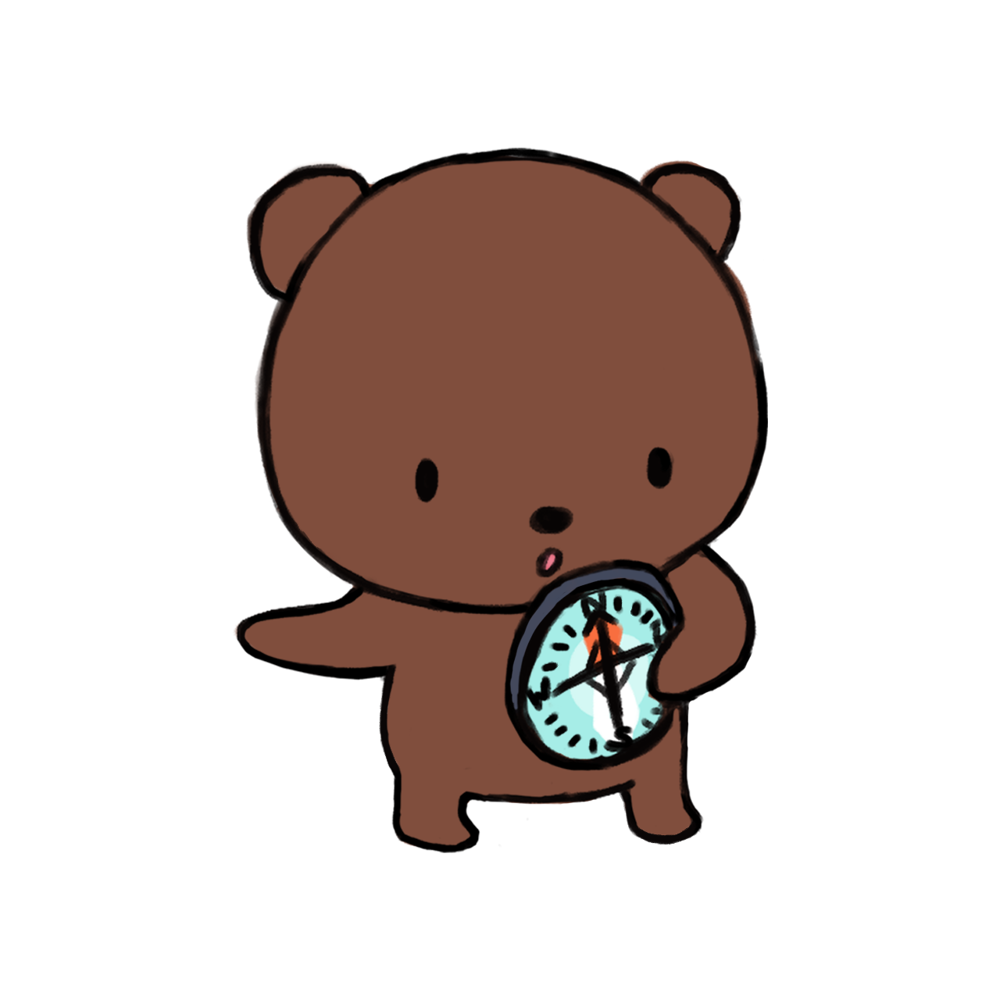
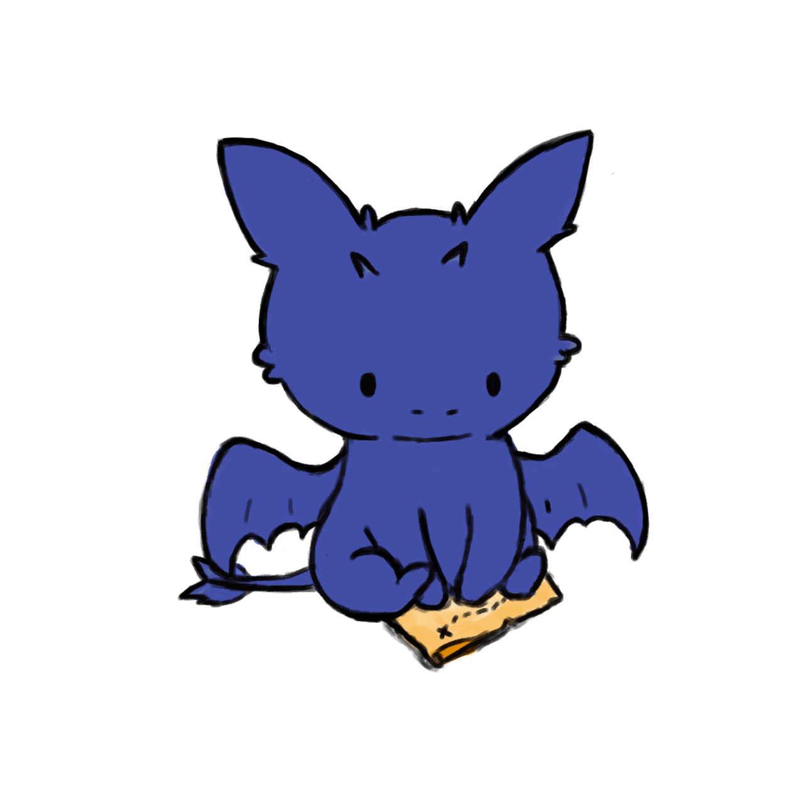
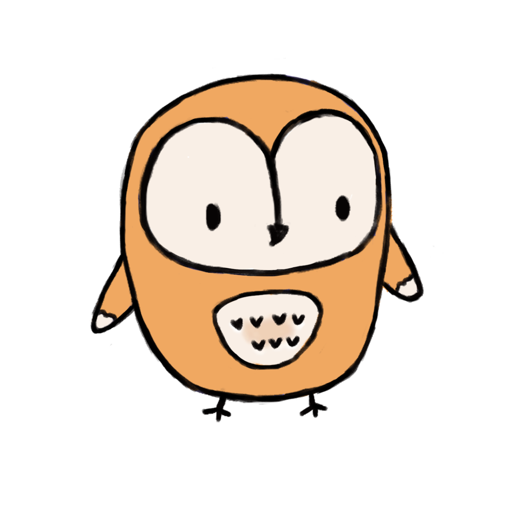
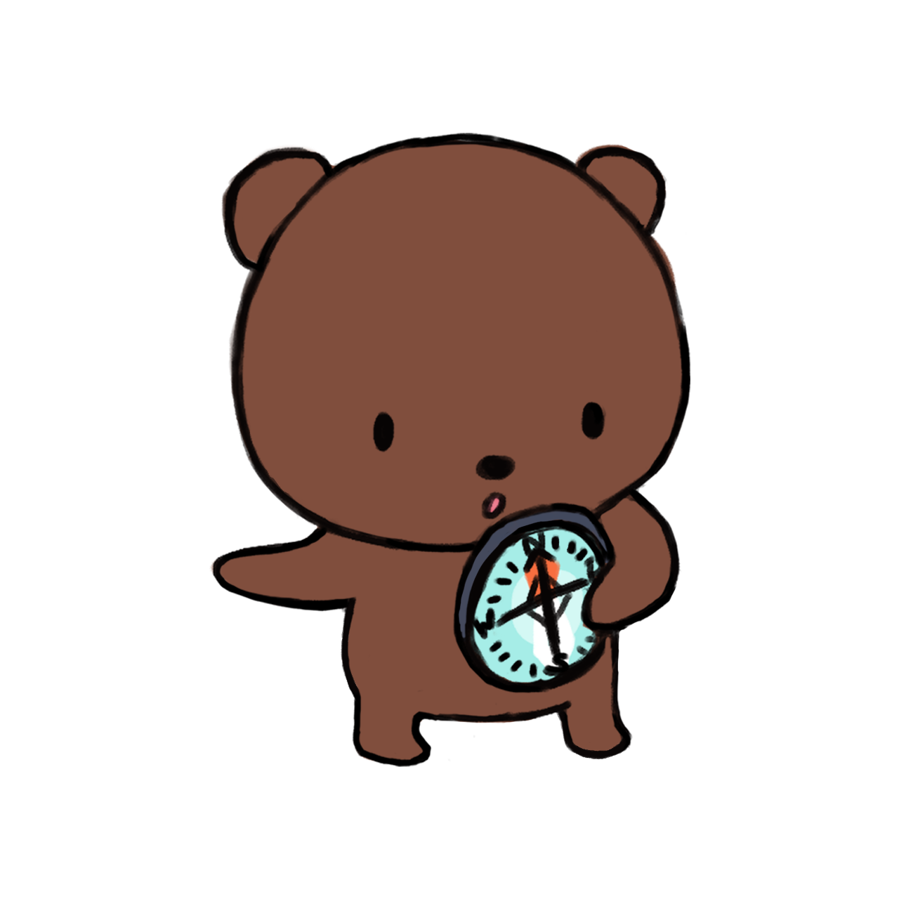
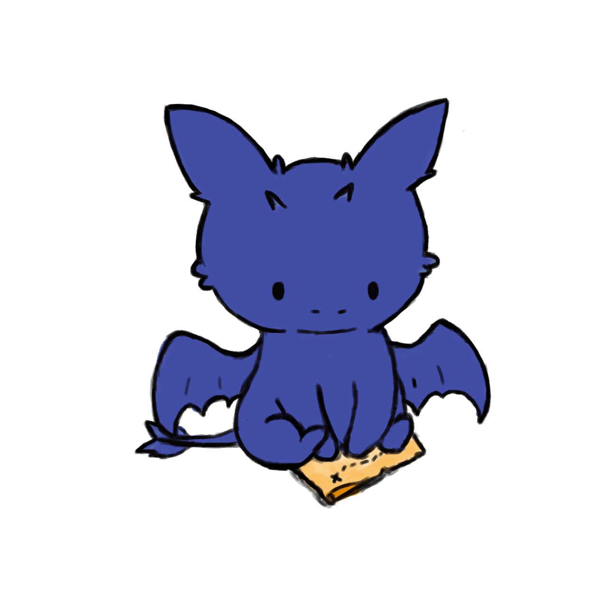
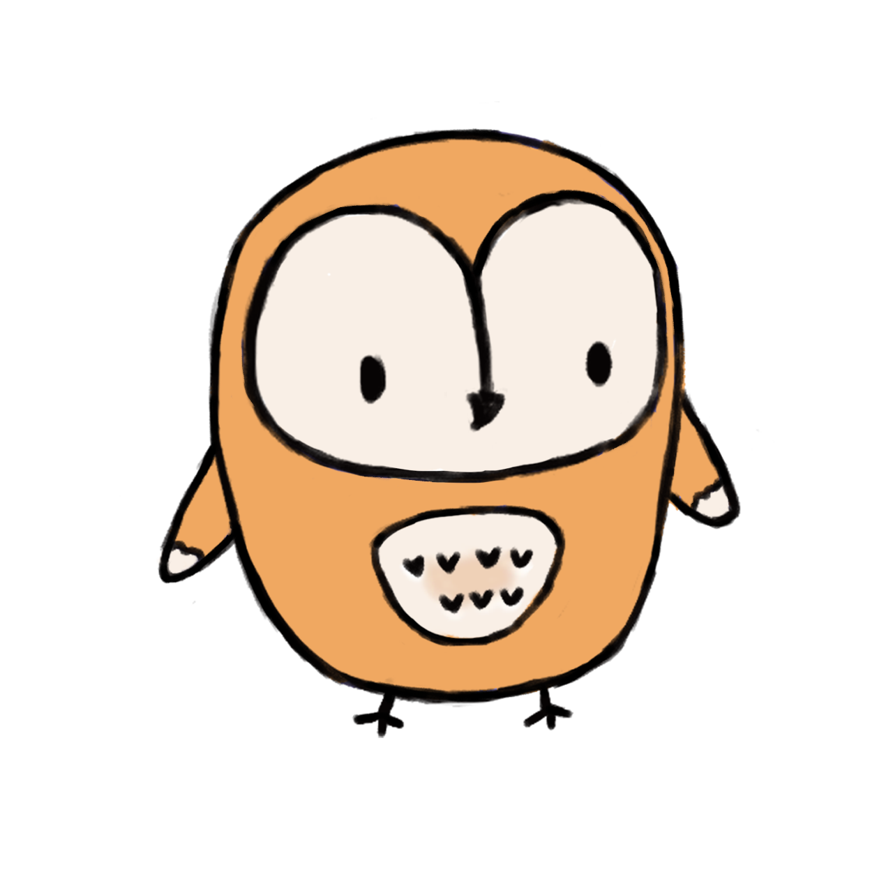
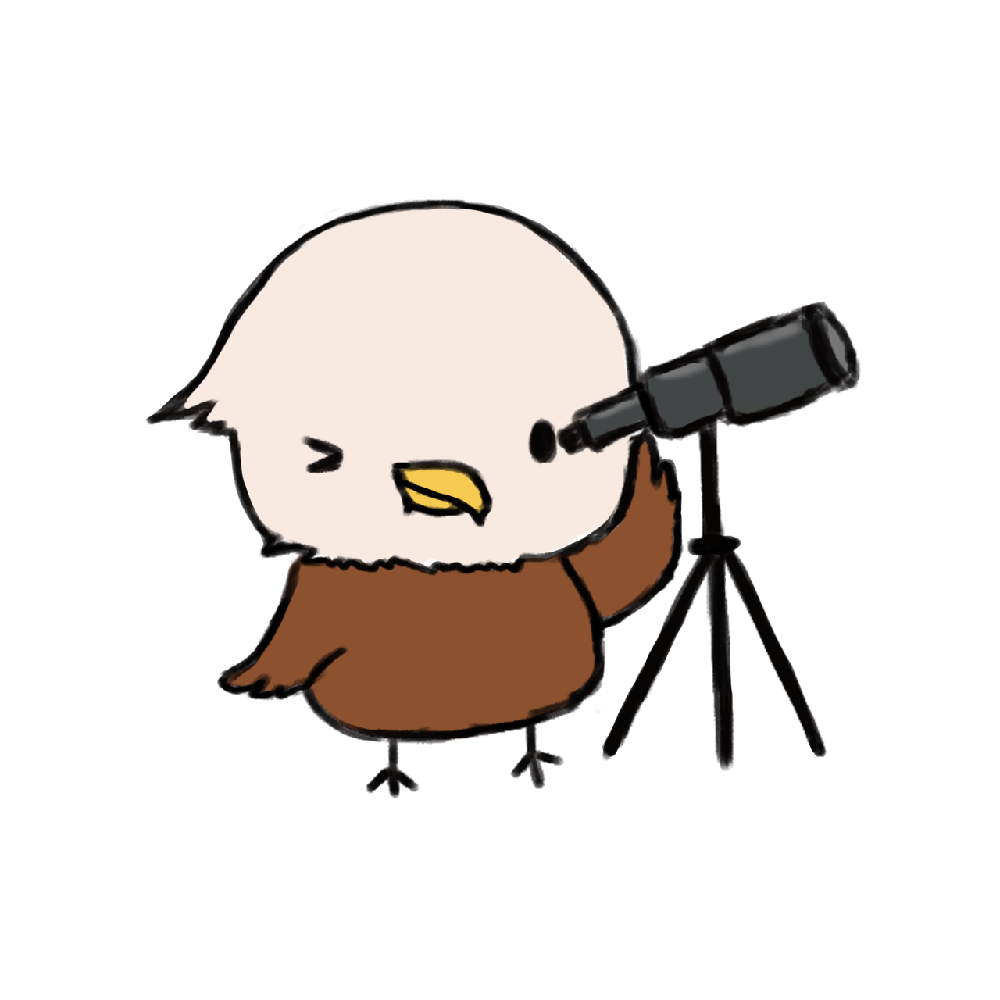
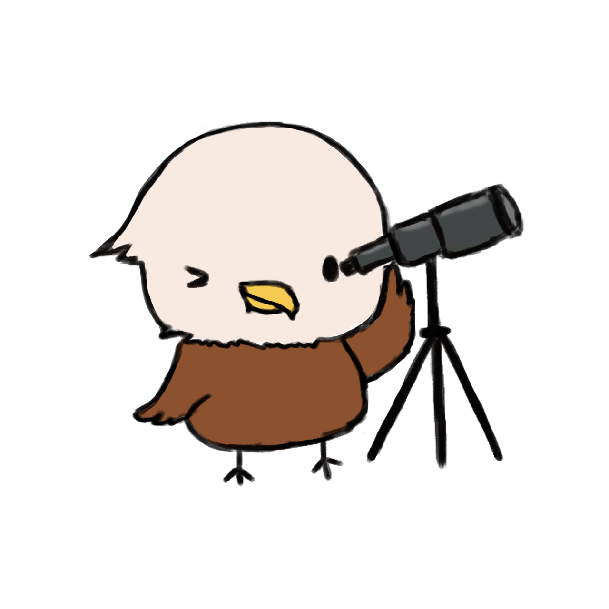

Drawing and Painting
I'm not a professional artist but I have always enjoyed drawing and painting since young.
It started off with my parents sending me for art lessons since young. Back then I was still a
grumpy child who disliked the crayons and watercolour classes because all I wanted was to ...
watch Teen Titans.Who knew that this skill followed me throughout my childhood till my
teenage years where I experimented with all forms of art - from sketching to colour pencils
to poster colours and eventually digital art.
 





 
The above designs were created when I helped out my college with designing stickers
and t-shirts for fundraising sales during Flag Day. They represent the five houses in RC4 - Leo,
Ursa, Draco, Noctua and Aquila. The Orca is the mascot that represents the college, as well as the
colour Teal.

The above designs were created when I helped out my college with designing stickers
and t-shirts for fundraising sales during Flag Day. They represent the five houses in RC4 - Leo,
Ursa, Draco, Noctua and Aquila. The Orca is the mascot that represents the college, as well as the
colour Teal.
The picture above is a snapshot of my work-in-progress in drawing Vulpix. I usually have a reference (for colours and sketching) but I don't trace the images cause tracing doesn't help me to practice drawing. Adobe Photoshop is my go-to design software because of its versatility (although it heats up my poor Macbook Pro and significantly slows down my computer). I wouldn't say that I am extremely good at drawing but it has always been a platform for me to destress especially after long hours of studying. I don't usually post my pieces online so my friends usually aren't aware that I like to do art (which makes it a hidden talent I suppose).